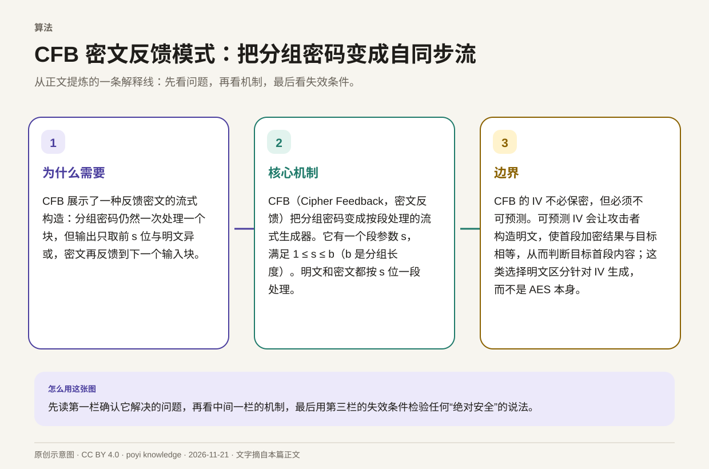
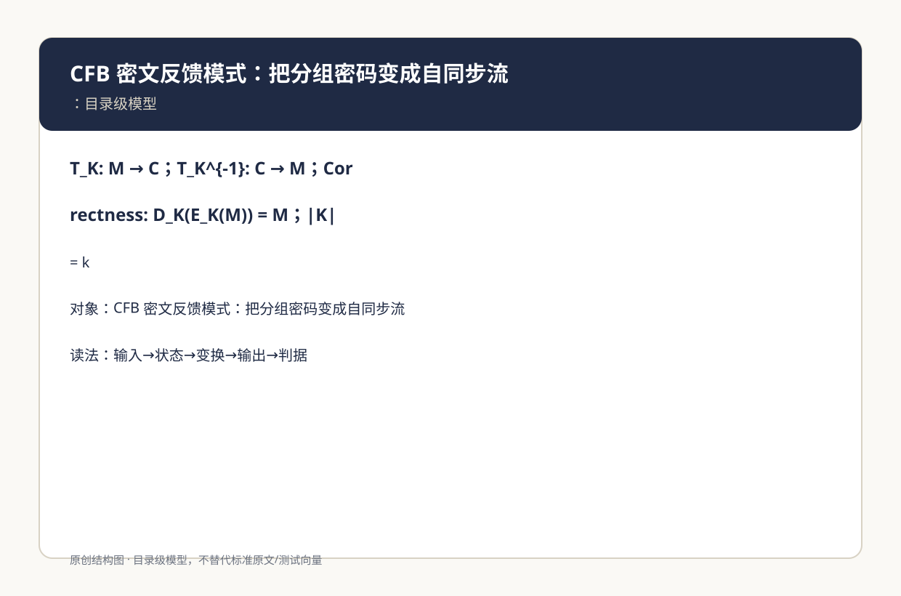

原理与机制
算法：CFB 密文反馈模式（Cipher Feedback）。CFB（Cipher Feedback，密文反馈）把分组密码变成按段处理的流式生成器。它有一个段参数 s，满足 1 ≤ s ≤ b（b 是分组长度）。明文和密文都按 s 位一段处理。加密过程是：
I_1 = IV
I_j = LSB_(b-s)(I_(j-1)) || C_(j-1) (j >= 2)
O_j = E_K(I_j)
C_j = P_j xor MSB_s(O_j)
其中 I_j 是第 j 个输入块，O_j 是分组密码的输出块，C_j 是第 j 个密文段。CFB 只使用正向 E_K，不需要 D_K。解密使用同样的输入块构造：
P_j = C_j xor MSB_s(O_j)
第一个输入块是 IV。后续输入块由前一个输入块左移 s 位、再把前一个密文段填入最低 s 位构成。因此加密必须串行，因为下一个输入块依赖上一个密文段；解密在输入块构造完成后，可以对正向 E_K 并行计算。CFB 的 IV 不需要保密，但必须不可预测。这与 CBC 的 IV 要求相同，而不是 CTR/OFB 那种只要求唯一的要求。可预测 IV 会让攻击者判断两个消息的首段是否相同，或进行选择明文区分。CFB 以 s 位段为单位，密文段与明文段等长。当 s=8 时，任意字节串都可以直接处理，不需要把消息补到分组长度；当 s 等于分组长度时，输入长度必须是分组长度的整数倍，除非协议另有分段规则。CFB 不改变底层分组密码的块大小或密钥长度。

为什么重要
CFB 展示了一种反馈密文的流式构造：分组密码仍然一次处理一个块，但输出只取前 s 位与明文异或，密文再反馈到下一个输入块。选择 s=8 时，它可以直接处理字节流；选择 s=b 时，它接近 CBC 的链接结构，但解密方向不同。当 s=8 时，CFB 不需要块填充，并且只需要分组密码的正向方向。它的代价是 IV 必须不可预测、加密不能并行，以及错误会沿着反馈链传播。理解 CFB 也有助于区分流式与无状态：CFB 看起来像流密码，但它的密钥流依赖前一个密文段，因此不是 CTR 那种可随机访问的独立密钥流。
应用与实例
CFB 是通用的机密性模式，适合需要按段处理、且不希望做块填充的场景。SP 800-38A 面向联邦机构和非政府组织的敏感信息保护，CFB 是其中定义的模式之一。当 s=8 时，CFB 可以逐字节处理数据，适合字节流或字符流；当 s=b 时，CFB 按完整块反馈，适合与块结构一致的数据。具体选择 s 必须由协议明确，因为 s 决定段边界、错误传播范围和互操作性。CFB 不提供完整性。需要认证时，必须使用 AEAD 或外加 MAC；不能因为密文看起来是流式就认为它具备抗篡改能力。

边界与攻击面
CFB 的 IV 不必保密，但必须不可预测。可预测 IV 会让攻击者构造明文，使首段加密结果与目标相等，从而判断目标首段内容；这类选择明文区分针对 IV 生成，而不是 AES 本身。### IV 重用
同一密钥下重复使用 IV 会重复首段密钥流，泄露两条消息首段的异或关系；后续段因为反馈了不同密文，通常不会保持相同，但首段的泄露已经足够破坏机密性。### 位翻转与错误传播
翻转 CFB 密文段的一个比特，会翻转对应明文段的同一比特；同时该密文段进入下一个输入块，导致后续输出块变化。当 s=b 时，错误通常影响当前块和下一块，之后重新同步；当 s<b 时，错误会跨越更多段。### 无完整性
CFB 只提供机密性，不提供完整性。攻击者可以修改密文段并影响明文，CFB 本身无法检测；需要完整性时，必须使用 AEAD 或 MAC。### 段参数与互操作
s 是 CFB 的显式参数。发送方和接收方必须使用相同的 s，否则段边界和反馈方式不同，密文无法正确解密。把 CFB 当成一个没有参数的单一模式，是协议设计中的常见错误。本文教学实现只演示 AES-128-CFB128 和 CFB8 的官方向量、位翻转和固定数据的 IV 重用关系。它不实现安全的 IV 生成、常量时间处理、密钥管理、协议状态机或侧信道防护，不能用于生产环境。
历史与背景
1980 年，FIPS 81 为 DES 定义了 CFB 模式，使分组密码可以按小于块长的段处理数据。2001 年，SP 800-38A 把 CFB 推广到通用分组密码，并给出不同 s 值的测试向量。CFB 的长期使用说明，流式并不等于无状态。CFB 通过反馈密文获得自同步性质，但也因此把 IV 和错误传播变成协议必须处理的边界。后来的 CTR 和 AEAD 用不同的方式解决了流式处理与完整性之间的张力。这段历史说明，CFB 是一个边界清晰的基础模式：选对 s、正确生成 IV、接受错误传播的代价，它可以提供机密性；把这些前提省略，就会把模式性质变成攻击面。
逐步示例与核验
复算示例
取标准或公开测试向量中的一组参数，按“输入—执行—输出”记录：先写出该条目的形式式 (C=E_K(P;r),\qquad P=D_K(C))；再按规范顺序执行每一步，最后把输出与独立实现或标准向量逐字节对照。若没有可引用的数值向量，就只记录结构步骤，不伪造输出。
参考出处
- Wikipedia search entry for CFB 密文反馈模式. https://zh.wikipedia.org/w/index.php?search=CFB%20%E5%AF%86%E6%96%87%E5%8F%8D%E9%A6%88%E6%A8%A1%E5%BC%8F
- Handbook of Applied Cryptography (Menezes, van Oorschot, Vanstone). https://www.cacr.math.uwaterloo.ca/hac/